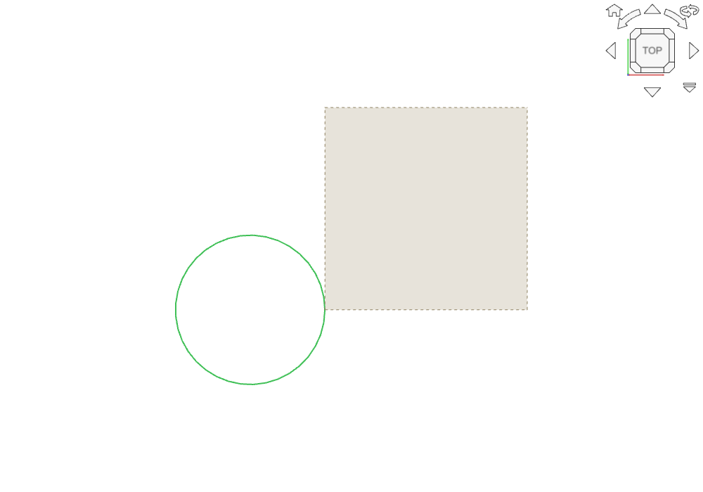
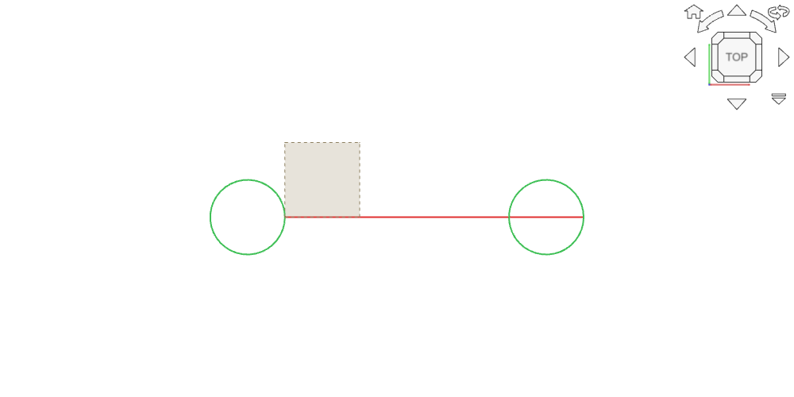

CAM unit tests with the PR applied: no verdict


G0 X25 Y0 / G2 X25.001 Y0 I-5 J0, typical of rounded imported G-code) was drawn as a full circle on main and now draws nothing.PathSegmentWalker::walk() arc branch: full circles are now recognized by exact equality of the projected start/end points (any GetAngle() result that is finite becomes 2 pi). The G2/G3 "use the major angle" flip is rewritten as anorm.z * norm.z < 0, which is equivalent to the old two-branch test for every non-zero cross product. The old fallback else if (angle == 0) angle = 2 pi (cross product exactly zero and angle exactly zero) is removed.
PathSegmentWalker feeds three callers: the 3D path rendering (ViewProviderPath), Toolpath.BoundBox (Path.getBoundBox), and Area::getClearedArea() (rest machining cleared area). All three change the same way.
CAM_tests_run (run with HOME/XDG pointed at a scratch dir): 143 tests from 3 suites, all PASSED (includes the 124 new PathSegmentWalker cases).FreeCADCmd -t TestCAMApp --safe-mode: Ran 1990 tests, OK (skipped=13, expected failures=4). Note: under ulimit -v 8000000 the run aborts in TestPlanarSurfaceOp.test20 (Waterline, "terminate called recursively"); without the cap the same test and the full suite pass. Memory-cap artifact, not related to this PR."main" = review3's previous build (PathSegmentWalker.cpp, Path.cpp and Vector3D.cpp identical to upstream/main).
| Case | main | PR |
|---|---|---|
Issue #32741 arc (G2 I-3.690986636971033 J7.09e-06, start=end) |
bbox 0 x 0 (circle gone) | X -7.382..0, Y -3.689..3.689 (full circle) |
| 500 random exact full circles (G2/G3 alternating, r up to 28) | 133 collapsed | 0 collapsed |
| Quarter / semicircle / full, G2+G3, G17/G18 | - | identical |
| Helix full turn (Z changes), G91 relative full circle, parsed G-code full circle | - | identical / fixed (the parsed G3 X12.3456 Y7.891 I-2.2222 J1.1111 circle collapsed on main, drawn on PR) |
| Near-full arcs, end off tangentially or off-axis by 1e-13..1e-3 | - | identical (unchanged behavior, including the existing cases that draw as tiny arcs) |
End on the same radial line as start, radius off by 1e-13..1e-3 (G0 X0 Y0, G2 X<eps> Y0 I-5 J0) |
full circle | nothing drawn (bbox collapses to the endpoints) - 12 cases |
GUI (review3 FreeCAD 27.1): the issue's own file arc_viewprovider.FCStd, Custom op recomputed: the circle renders (39 line coordinates, bbox -7.369..0 x -3.688..3.688). Screenshot pr_issue_circle.png.
GUI repro of the regression: Custom op with three circles: exact full circle at X0 (drawn), G0 X25 Y0 / G2 X25.001 Y0 I-5 J0 (NOT drawn on PR, only the rapid line passes through), G0 X40 Y0 / G2 X40.001 Y0.001 I-5 J0 (drawn). Screenshot pr_radial_mismatch.png.
Radially-mismatched full circle disappears. When the end point equals the start angle-wise but differs a little in radius (cross product exactly 0, GetAngle() exactly 0), main fell into else if (angle == 0) angle = 2 pi and drew a full circle; the PR drops that fallback, so the sweep is 0 and the circle is not drawn (and is left out of the BoundBox / cleared area). LinuxCNC treats such a move as a full circle (radius difference within its tolerance), so the preview hides a cut the machine makes. Real-world source: imported or hand-written G-code with rounded coordinates (circle starting at 0/90/180/270 degrees, end rounded differently from the start). Rare; CAM's own generators emit half circles (Area, helix, thread milling), so FreeCAD-generated paths are not affected. Possible fix: keep the old fallback after the new checks (else if (angle == 0 && anorm.*pz == 0) angle = 2 pi). Repro:
G0 X25 Y0 Z0 then G2 X25.001 Y0 I-5 J0.Mod/Part/MeshDeviation in the user parameters (restored in TearDown). (tested, restored fine in a scratch HOME)angle == 0 full-circle fallback (tested: the regression above).